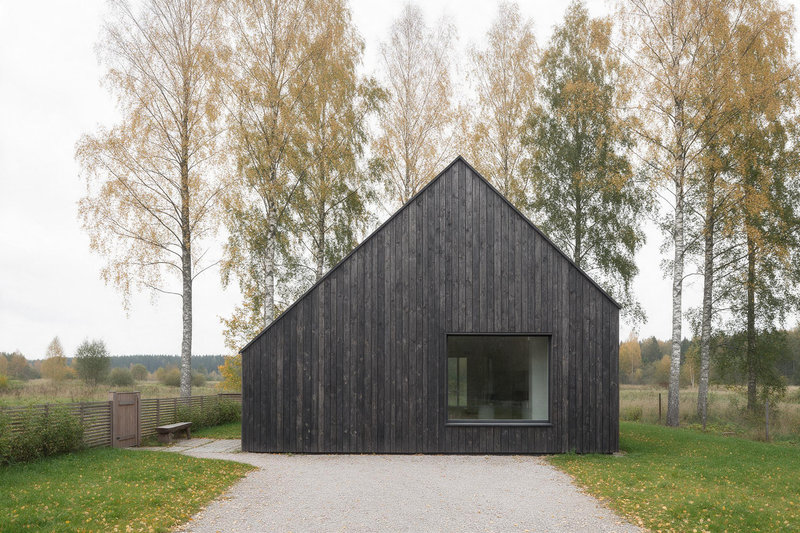
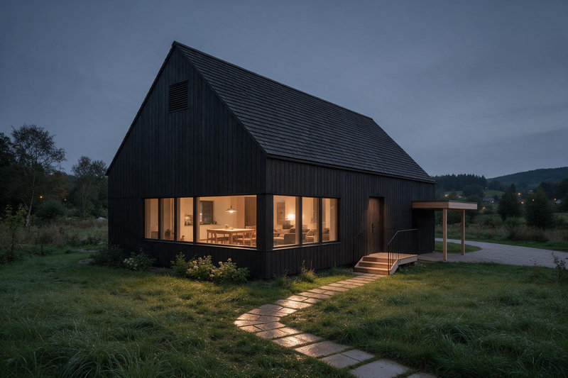
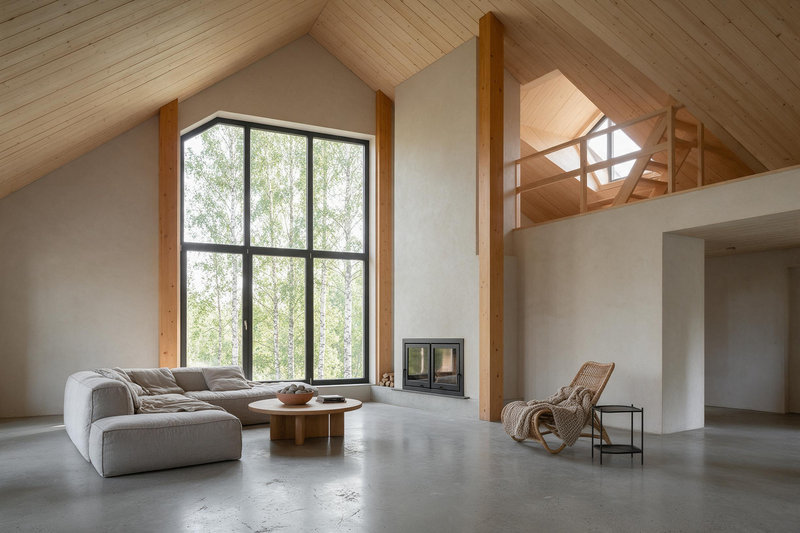
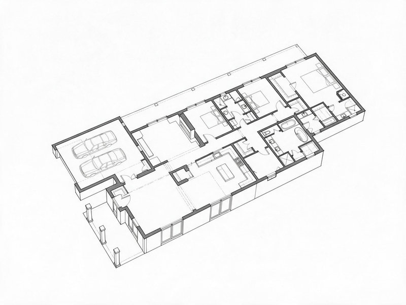
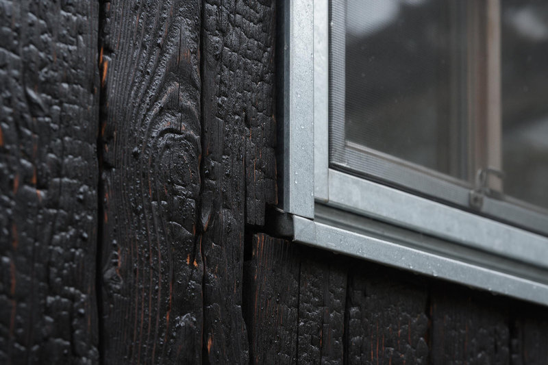

Māja pie bērziem 2025  Skats no ceļa Jelgava, 240 m², realizēts, 2025  Dārza puse Jelgava, 240 m², realizēts, 2025  Dzīvojamā istaba Jelgava, 2025  Plāns Jelgava, 2025  Fasādes detaļa Jelgava, 2025